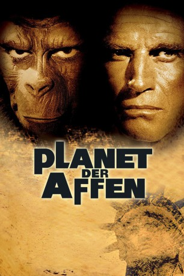

#5135 Planet der Affen
Alternativ: Planet of the Apes
Auszeichnungen: 1 Oscars gewonnen für 2 Oscars nominiert
 
 IMDB-Wertung: 8.0 / 10
IMDB-Wertung: 8.0 / 10  Metascore: 0
Metascore: 0 
Astronaut Taylor überlebt den Raum-Zeitsprung durch das All – 2000 Jahre in die Zukunft. Eine Notlandung verschlägt ihn auf einen entfernten Planeten, der von Affen regiert wird. Auf grausame Weise missbrauchen die herrschenden Affen eine primitive Menschenrasse für Experimente und zur Unterhaltung. Schon bald wird Taylor selbst zum Gejagten, seine einzige Hoffnung auf Rettung ist ein hilfsbereiter Schimpansen-Wissenschaftler.
Jahr: 1968
Dauer: 112 Minuten
FSK: 12
Land: USA Studio: Twentieth Century - Fox Film CorporationTonspuren: DTS - ,
Untertitel: Deutsch,
Auflösung: 1080p (1920x816) Größe: 10240 MB
Genre: Sci-Fi, Abenteuer
Regisseur: Franklin J. Schaffner
Drehbuch: Alex Gibney
Soundtrack:
Darsteller:
 Charlton Heston als George Taylor
Charlton Heston als George Taylor Roddy McDowall als Cornelius
Roddy McDowall als Cornelius Kim Hunter als Zira
Kim Hunter als Zira- Maurice Evans als Dr. Zaius
 James Whitmore als President of the Assembly
James Whitmore als President of the Assembly- James Daly als Honorious
 Linda Harrison als Nova
Linda Harrison als Nova Lou Wagner als Lucius
Lou Wagner als Lucius Woodrow Parfrey als Maximus
Woodrow Parfrey als Maximus Buck Kartalian als Julius
Buck Kartalian als Julius Norman Burton als Hunt Leader
Norman Burton als Hunt Leader Army Archerd als Gorilla , uncredited
Army Archerd als Gorilla , uncredited Billy Curtis als Child Ape , uncredited
Billy Curtis als Child Ape , uncredited Felix Silla als Child Gorilla , uncredited
Felix Silla als Child Gorilla , uncredited- Robert Gunner als Landon
- Jeff Burton als Dodge
- Wright King als Dr. Galen
 Paul Lambert als Minister
Paul Lambert als Minister- Gene O'Donnell als (unconfirmed
- James Bacon als Ape , uncredited
- Erlynn Mary Botelho als Gorilla , uncredited
- Priscilla Boyd als Human #1 , uncredited
- Eldon Burke als Gorilla , uncredited
- David Chow als Chimpanzee , uncredited
- Frank Delfino als Child Ape , uncredited
- Buddy Douglas als Child Ape , uncredited
- Chuck Fisher als Gorilla , uncredited
- William Graeff Jr. als Gorilla , uncredited
- Lars Hensen als Gorilla , uncredited
- Irvin 'Zabo' Koszewski als Gorilla , uncredited
- Norma Jean Kron als Chimpanzee , uncredited
- Robert Lombardo als Gorilla Photographer , uncredited
- Jerry Maren als Child Ape , uncredited
- Cass Martin als Chimpanzee , uncredited
- Steve Merjanian als Gorilla , uncredited
- Harry Monty als Child Ape , uncredited
- John Quijada als Gorilla , uncredited
- Smokey Roberds als Chimpanzee , uncredited
- Dave Rodgers als Gorilla , uncredited
- Jane Ross als Human , uncredited
- George Sasaki als Chimpanzee , uncredited
- Emory Souza als Child Ape , uncredited
- Dianne Stanley als Astronaut Stewart , uncredited
Datei: X:\7+mehr(A-Z)\Planet der Affen\1 Planet der Affen (1968, FSK12, 1920x816).mkv seit 23.12.2016
Festplatte: HD Collection-7+mehr(A-Z)+Person
 Es gibt insgesamt 14 Filme in der Gruppe '7+mehr(A-Z)\Planet der Affen'
Es gibt insgesamt 14 Filme in der Gruppe '7+mehr(A-Z)\Planet der Affen'